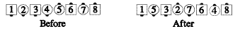
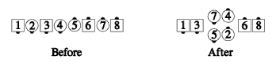

From any appropriate formation: The dancers specified, who needn't be together, act as though they had slid together, done the call, then slid apart. If the call changes the formation, stay near the original centers' spots. Dancers adjust to close up any gaps that were created (as in the Disconnected Crossfire, below).
For example: Girls Disconnected Cross Roll to a Wave:

For example: Girls, Disconnected Crossfire:

Common applications include Swing Thru, Mix, Switch the Wave, Cross Roll to a Wave, and Crossfire.